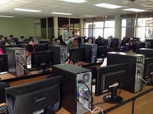

VISITA NUESTRO VIDEO PARA SABER MAS HACERCA DE LA PROGRAMACION
EN EL SIGUIENTE BOTON PUEDES DESCARGAR EL PROGRAMA DE ESTUDIOS PARA VERIFICAR LAS MATERIAS QUE DEBES CURSAR EN ESTA AREA


Ocultar Texto
Mostrar Texto
Msion
Formar personas con conocimientos Tecnologicos en las areas industrial,comercial y de servicios, a traves de la preparacion de bachilleres y profesionales tecnicos, con el fin de contribuir al desarrollo sustentable del pais.
Vision
Ser una institucion de Educacion Media Superior,certificada, orientada al aprendisaje y el desarrollo de conocimientos Tecnologicos y Humanisticos.
Redes Sociales
Ocultar Imagen
Mostrar Imagen
La carrera de Tecnico en programacion ofrece las competencias profecionales que permiten al estudiante realizar actividades dirigidas a: analizar, diseñar,desarrollar,instalar,y mantener software de aplicacion tomando como base los requerimientos del usuario.
Al termino de la carrera el egresado podra laborar en compañias y negocios publicos o privados, dedicadas al desarrollo de software y en el analisis, diseño e implementacion de sistemas de informacion de proposito general y particular; asi mismo tienes la opcion de titularte como: Tecnico en Programacion o continuar con tus estudios universitarios en las siguientes carreras: Ing.Civil, Ing.Electromecanico, Ing.Industrial, Ing.Electricista, Lic. en Informatica, Arquitectura o en cualquier carrera del Area Fisico-matematicas.
VISITA NUESTRO VIDEO PARA SABER MAS HACERCA DE LA PROGRAMACION
EN EL SIGUIENTE BOTON PUEDES DESCARGAR EL PROGRAMA DE ESTUDIOS PARA VERIFICAR LAS MATERIAS QUE DEBES CURSAR EN ESTA AREA
Calle central poniente S/N Barrio San Francisco C.P 30900 (telefono y fax: 962-64-10262)
e-mail institucional: cbtis243.dir@uemstis.sems.gob.mx